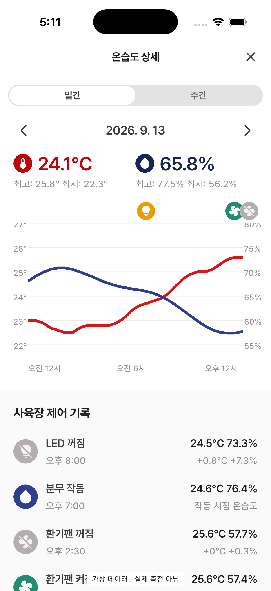
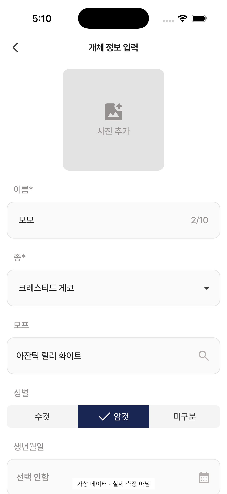
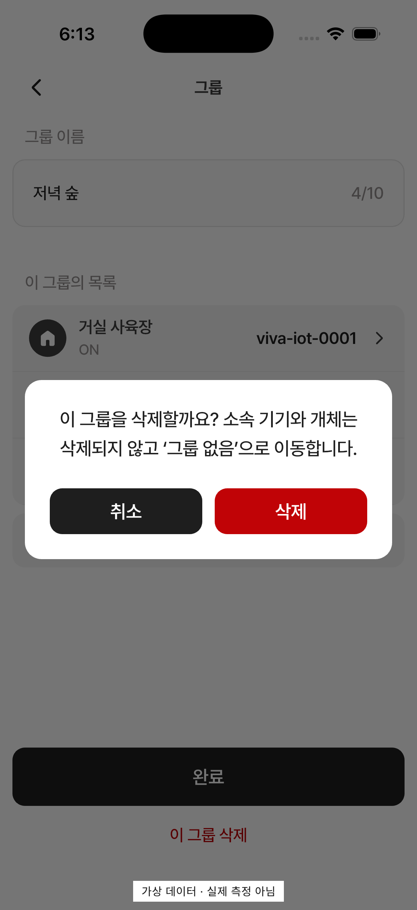
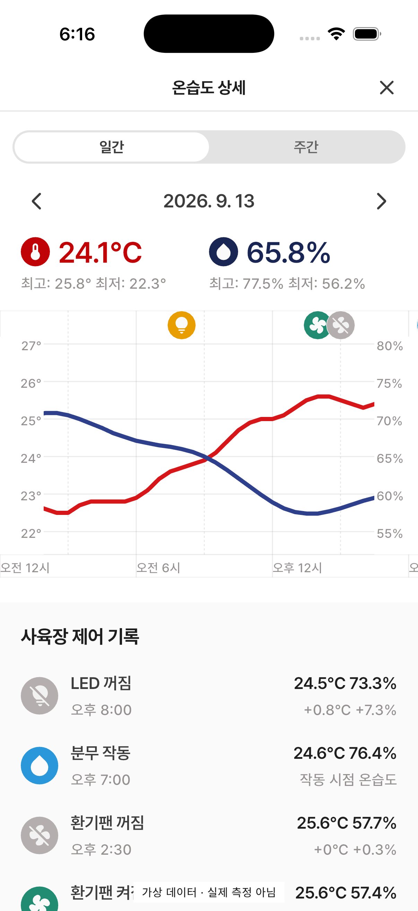
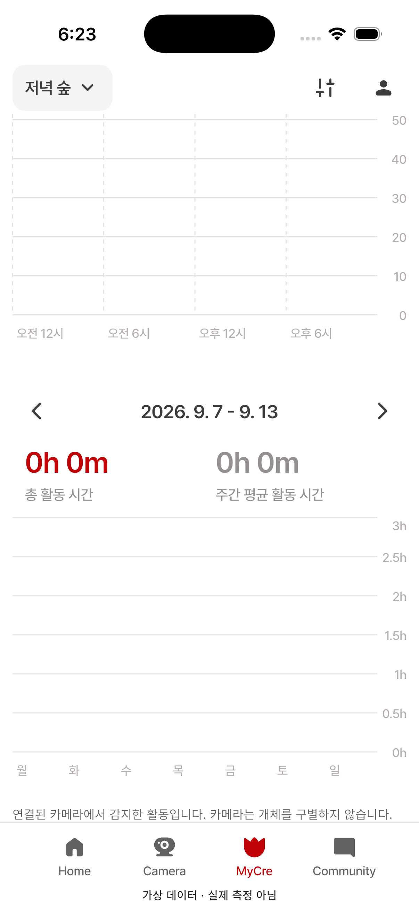
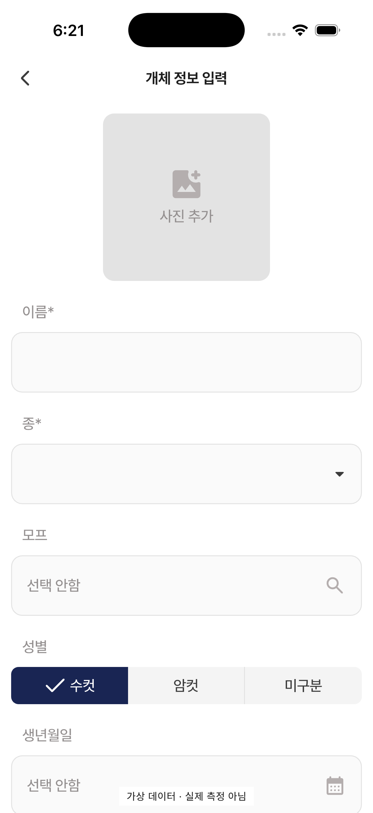
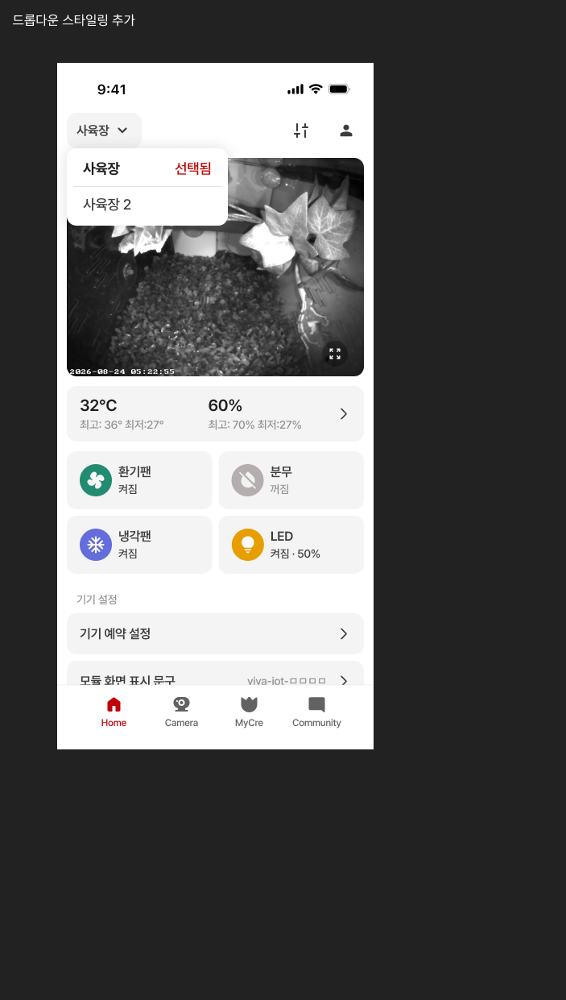
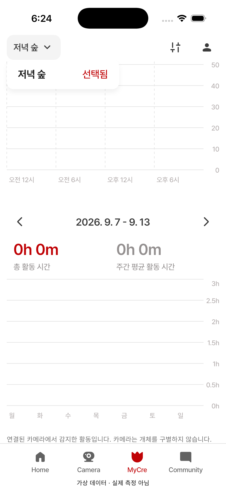
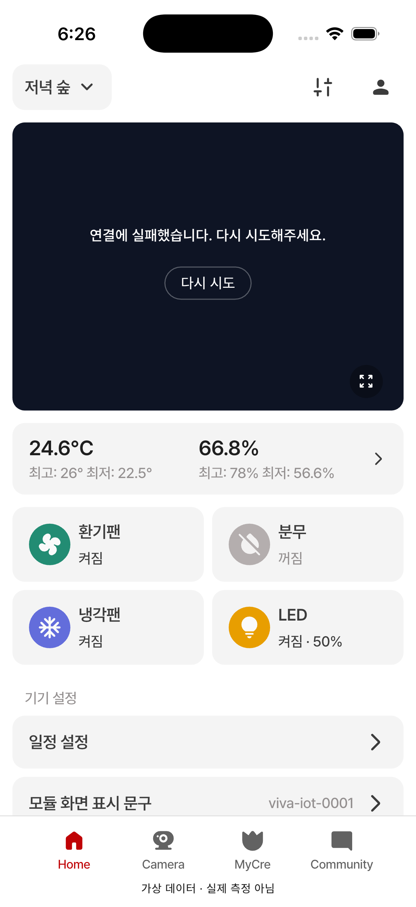
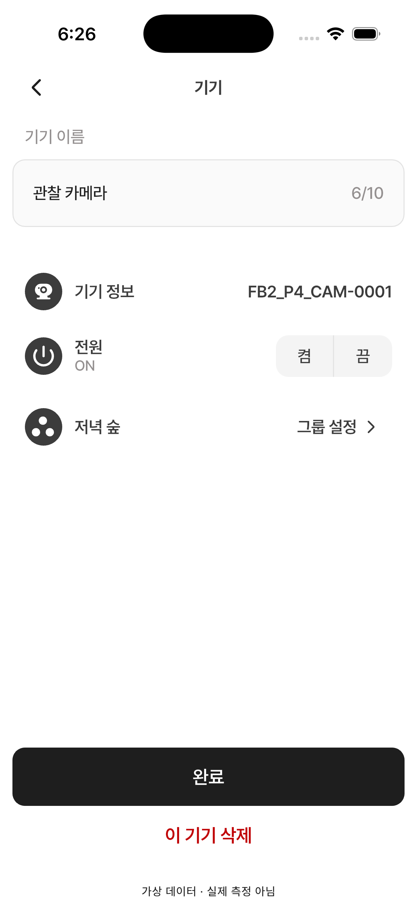

01 그룹 상세
하단 완료와 이 그룹 삭제, 원본 카드·구분선·상세 화살표. 그룹만 삭제하는 확인 동작 추가.


2026-09-15 · 0.107.7+218 · e45f5c9
기존 차이9항목과 승인된 그룹 삭제·미연결 MyCre 반영. 모든 이름·측정치는 가상 데이터이며 화면에 표시했습니다.
Figma393pt / Simulator402pt를 같은 논리 픽셀 배율로 표시합니다. 상태바·안전영역·기록값은 디자인 오류와 구분합니다.
검증: 전체859통과·6건너뜀, 최종 CTA/흰배경7통과, 분석 에러0·경고0(기존 info6), 일반 iOS/Android 빌드 통과. 그룹 삭제 운영 RPC는 미배포로 추가 서버 작업이 필요합니다.
하단 완료와 이 그룹 삭제, 원본 카드·구분선·상세 화살표. 그룹만 삭제하는 확인 동작 추가.
ON 고정 정책 유지. 회색 112×40 패널의 중앙 구분선, 흰 선택 캡슐 제거.
종류별 36px 원/20px glyph, 그룹 카드 간격 및 plus24·높이52 추가 카드 반영.
기존 카드와 그룹 없음 빈 상태 유지. 이름은 동일 가상 데이터.
상단 눈금 잘림 수정. 6시간 실선·3시간 점선, 마커와 시간행 외곽선, 분무 VIVA 파랑. 데이터에 따른 선 형태·축 범위 차이 유지.



V자 드롭다운. 확인된 총 활동은 유지하고 관측 근거 없는 평균은 --. 안내로 인한 세로 위치 차이는 확정 기능 차이.


사진 glyph40 색을 deviceOff로 적용, 성별 비선택 영역 경계선. 원본은 수정 폼이므로 값·하단 액션 차이는 구분.



V자 드롭다운과 업데이트 없음/업데이트 오늘 유지. 네트워크 없는 QA이므로 라이브 실패와 회색 썸네일은 디자인 판정 제외.
승인 문구, 취소/삭제. 취소0회 쓰기 및 성공/실패는 자동 테스트로 검증.

스크롤 후 고정 Y축과 마커 확인.

원본 안내·218×56 CTA, 일간·주간 총 활동/평균 초기0과 빈 그래프. 실제 측정 데이터에 쓰지 않음.


주간까지 스크롤해 두 값0h0m·빈 그래프와 고정 흰 헤더 확인.

선택 영역은 남색, 남은 두 비선택 영역 사이만 구분선 유지.

흰200px·반경12·항목44·선택 Bold/선택됨. QA는1항목이라 메뉴 높이52px. 그림자는 MCP가 blur/offset을 제공하지 않아 근사값이며 수치 일치 판정 보류.


공통 헤더 V자 및 기존 제어 팔레트 확인. 라이브는 네트워크 없는 가상 검수 상태.

공통 기기 상세 패널 적용. Figma 사육장 예시와 비교하므로 ID/기기명 차이 구분.




{kind=link}
{kind=link}
{kind=link}
{kind=link}
{kind=link}
{kind=link}
{kind=link}
{kind=link}
{kind=link}
{kind=link}
{kind=link}